Practica 5
INTEGRANTES:
- Garcia Becerril Luis Angel Ian
- Rosales Perez Paola Monserrat
- Betanzos Fernando Melvin Emiliano
Contents
Objetivos
- Realizar gráficas de series de Fourier exponenciales y trigonométricas en tiempo continuo
- Manipulación de instrucciones en MATLAB
- Calculo númerico de los coeficientes de Fourier
Introduccion
Sabemos que existen diferentes formas para aproximar una integral definida.Entre ellas se encuentran las siguientes.
- El Teorema Fundamental del Cálculo es uno de ellos, este método junta los estudios de integreación y derivación, determinando así que ambos procesos son inversos.
- Formulas de Newton-Cotes,éste método consiste en usar un polinomio de aproximación en vez de una la función la cual podria resultar más complicada.
Regla del Trapecio.
Regla de Simpson.
Regla de tres octavos de Simpson.
- Formulas cerradas de Newton-Cotes Compuestas, las cuales concisten en subidividir el intervalo de integración en varios segmentos del mismo tamaño.
Regla Compuesta del Trapecio.
Regla Compuesta de Simpson.
- Cuadratura Gaussiana, este método nos dice que dada una integral de f(x) evaluada en [a,b] trata de aproximar esta integral por evaluación de la función en determinados puntos por determinadas constantes. Las evaluaciones son a elección pero dichas elecciones tienen restricciones.
Podemos calcular númericamente Dn usando la transformada discreta de fourier. El intervalo de muestreo es T segundos. Por lo tanto, hay 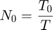 número de muestras en un período 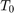.
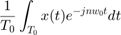
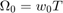
T distinto de cero producirá algún error de cálculo, que es inevitable en cualquier evaluación numérica de una integral. El error resultante de T distinto de cero se denomina error de alias. Por lo tanto podemos expresar la ecuación como:
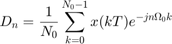
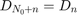
Ejemplo 6.1-4 Armonicos
- Gráfica de la serie de Fourier en un intervalo que muestre 5 repeticiones
- Gráfica de la señal y la serie de Fourier para 4 armonicos
- Gráfica del error
- Gráfica de la energía del error
- Espectro de magnitud para 4 armonicos
- Espectro de fase para 4 armonicos
close all; clear all; d0=0.504; dn=@(n) 0.504*(2/(1+16*n^2)); bn=@(n) 0.504*((8*n)/(1+16*n^2)); t0=0; tf=pi; f=@(t) exp(-t/2); armo=4; a=-pi; b=4*pi;
sfc(t0,tf,dn,d0,f,armo,a,b,bn)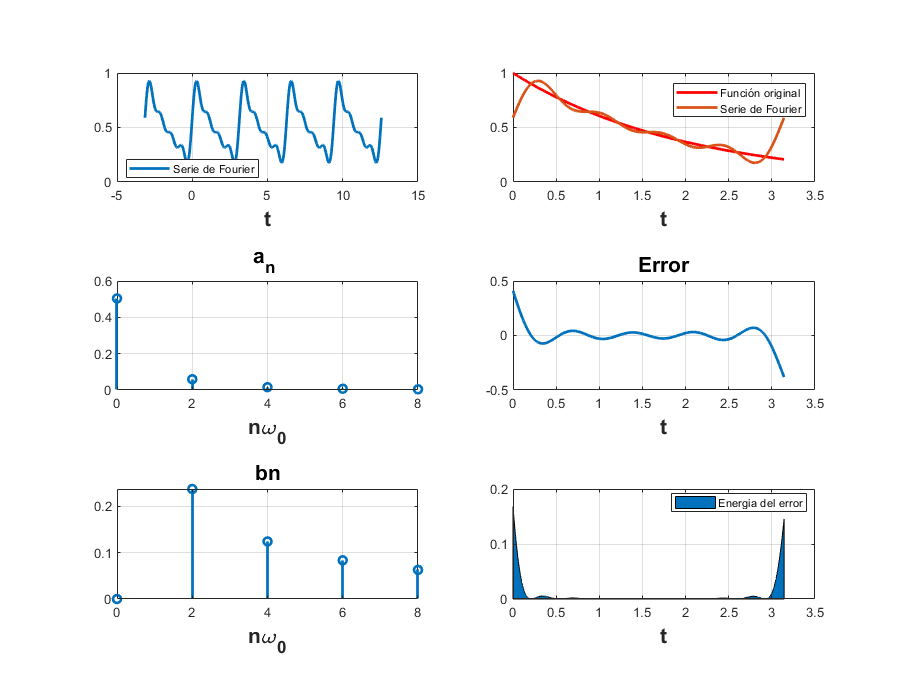
Ejemplo 6.1-15 Armonicos
- Todo lo anterior para 15 armonicos
close all; clear all; d0=0.504; dn=@(n) 0.504*(2/(1+16*n^2)); bn=@(n) 0.504*((8*n)/(1+16*n^2)); t0=0; tf=pi; f=@(t) exp(-t/2); armo=15; a=-7; b=7;
sfc1(t0,tf,dn,d0,f,armo,a,b,bn);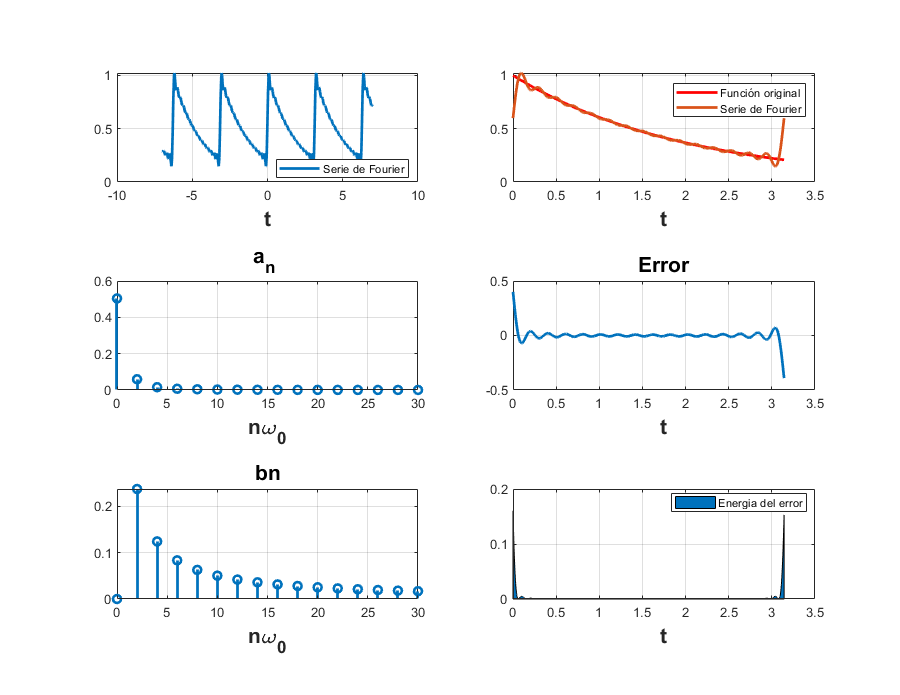
Ejemplo 6.2-4 Armonicos
- Gráfica de la serie de Fourier en un intervalo que muestre 5 repeticiones
- Gráfica de la señal y la serie de Fourier para 4 armonicos
- Gráfica del error
- Gráfica de la energía del error
- Espectro de magnitud para 4 armonicos
- Espectro de fase para 4 armonicos
close all; clear all; d01=0; dn1=@(n) (3*exp(-(pi*n*3i)/2)*(exp(pi*n*1i) - 1)*(2 + pi*n*1i + n*pi*exp(pi*n*1i)*1i - 2*exp(pi*n*1i)))/(2*n^2*pi^2); t01=-1; tf1=1; f1=@(t) (6*(-1-t).*((t>=-1)&(t<-0.5)))+((6*t).*((t>=-0.5)&(t<0.5)))+(6*(1-t).*((t>=0.5)&(t<1.5))); armo1=4; a1=-7; b1=7;
sfc2(t01,tf1,dn1,d01,f1,armo1,a1,b1);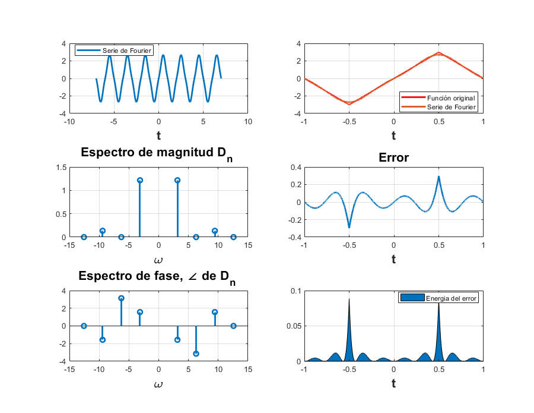
Ejemplo 6.2-15 Armonicos
close all; clear all; clc; d01=0; dn1=@(n) (3*exp(-(pi*n*3i)/2)*(exp(pi*n*1i) - 1)*(2 + pi*n*1i + n*pi*exp(pi*n*1i)*1i - 2*exp(pi*n*1i)))/(2*n^2*pi^2); t01=-1; tf1=1; f1=@(t) (6*(-1-t).*((t>=-1)&(t<-0.5)))+((6*t).*((t>=-0.5)&(t<0.5)))+(6*(1-t).*((t>=0.5)&(t<1.5))); armo1=15; a1=-7; b1=7;
sfc3(t01,tf1,dn1,d01,f1,armo1,a1,b1);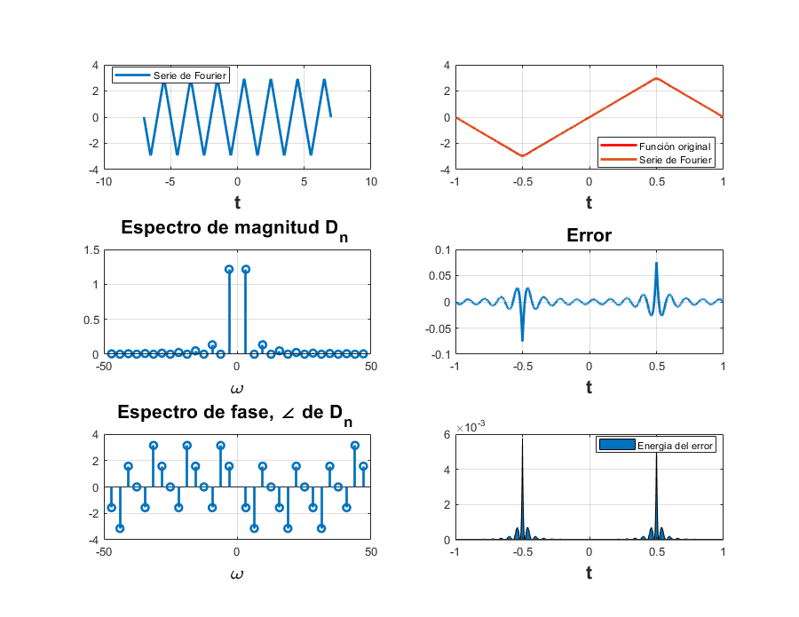
Ejemplo 6.4-4 Armonicos
- Gráfica de la serie de Fourier en un intervalo que muestre 5 repeticiones
- Gráfica de la señal y la serie de Fourier para 4 armonicos
- Gráfica del error
- Gráfica de la energía del error
- Espectro de magnitud para 4 armonicos
- Espectro de fase para 4 armonicos
close all; clear all; d0=1/2; dn=@(n) -(exp(-(pi.*n.*j)./2).*(exp(pi.*n.*j) - 1).*5734161139222659i)./(36028797018963968.*n); t0=-pi; tf=pi; f=@(t) ((0).*((t>=-pi)&(t<pi/2)))+((1).*((t>=-pi/2)&(t<pi/2)))+((0).*((t>=pi/2)&(t<pi))); armo=4; a=-7; b=7;
sfc4(t0,tf,dn,d0,f,armo,a,b);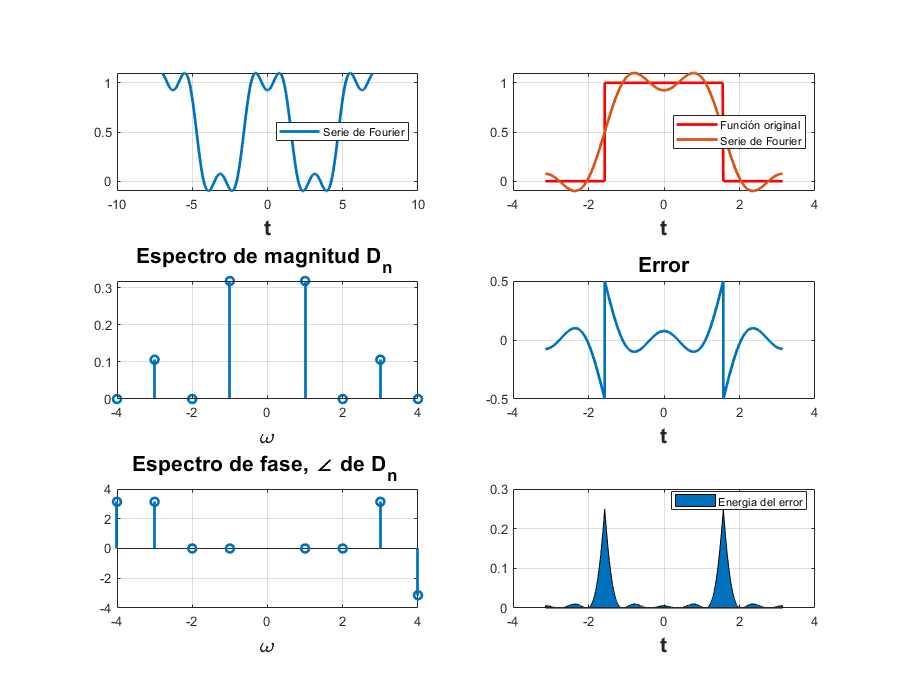
Ejemplo 6.4-15 Armonicos
close all; clear all; d0=1/2; dn=@(n) -(exp(-(pi.*n.*j)./2).*(exp(pi.*n.*j) - 1).*5734161139222659i)./(36028797018963968.*n); t0=-pi; tf=pi; f=@(t) ((0).*((t>=-pi)&(t<pi/2)))+((1).*((t>=-pi/2)&(t<pi/2)))+((0).*((t>=pi/2)&(t<pi))); armo=15; a=-7; b=7;
sfc5(t0,tf,dn,d0,f,armo,a,b);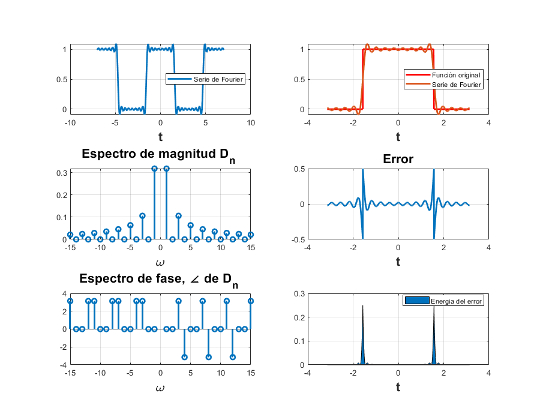
Ejemplo 6.5- 4 armonicos
- Gráfica de la serie de Fourier en un intervalo que muestre 5 repeticiones
- Gráfica de la señal y la serie de Fourier para 4 armonicos
- Gráfica del error
- Gráfica de la energía del error
- Espectro de magnitud para 4 armonicos
- Espectro de fase para 4 armonicos
close all; clear all; d0=0.504; dn=@(n) 0.504/(1+4*n*j); t0=0; tf=pi; f=@(t) exp(-t/2); armo=4; a=-7; b=7;
sfc6(t0,tf,dn,d0,f,armo,a,b);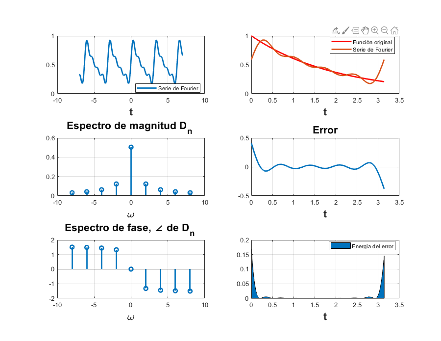
Ejemplo6.5-15 armonicos
close all; clear all; d0=0.504; dn=@(n) 0.504/(1+4*n*j); t0=0; tf=pi; f=@(t) exp(-t/2); armo=15; a=-7; b=7;
sfc7(t0,tf,dn,d0,f,armo,a,b);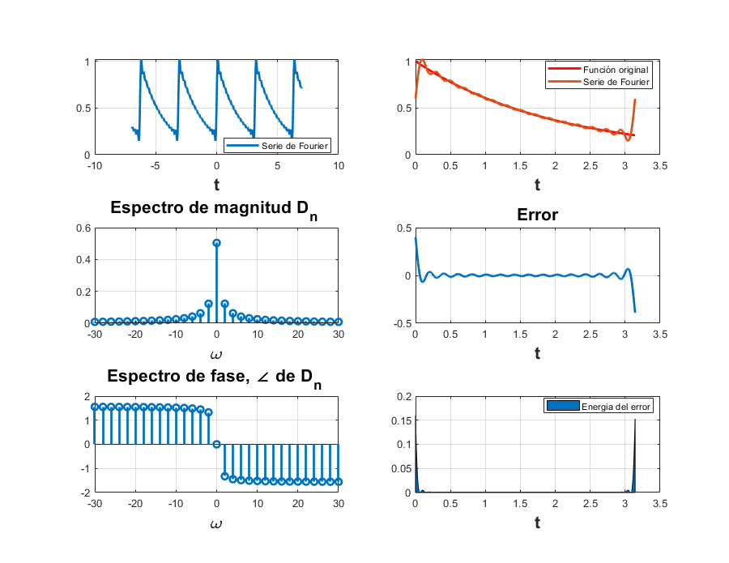
Ejemplo 6.7-4 armonicos
- Gráfica de la serie de Fourier en un intervalo que muestre 5 repeticiones
- Gráfica de la señal y la serie de Fourier para 4 armonicos
- Gráfica del error
- Gráfica de la energía del error
- Espectro de magnitud para 4 armonicos
- Espectro de fase para 4 armonicos
close all; clear all; d0=1/3; dn=@(n) 1/3; t0=0; tf=3; f=@(t) dirac(t); armo=4; a=-7; b=7;
sfc8(t0,tf,dn,d0,f,armo,a,b);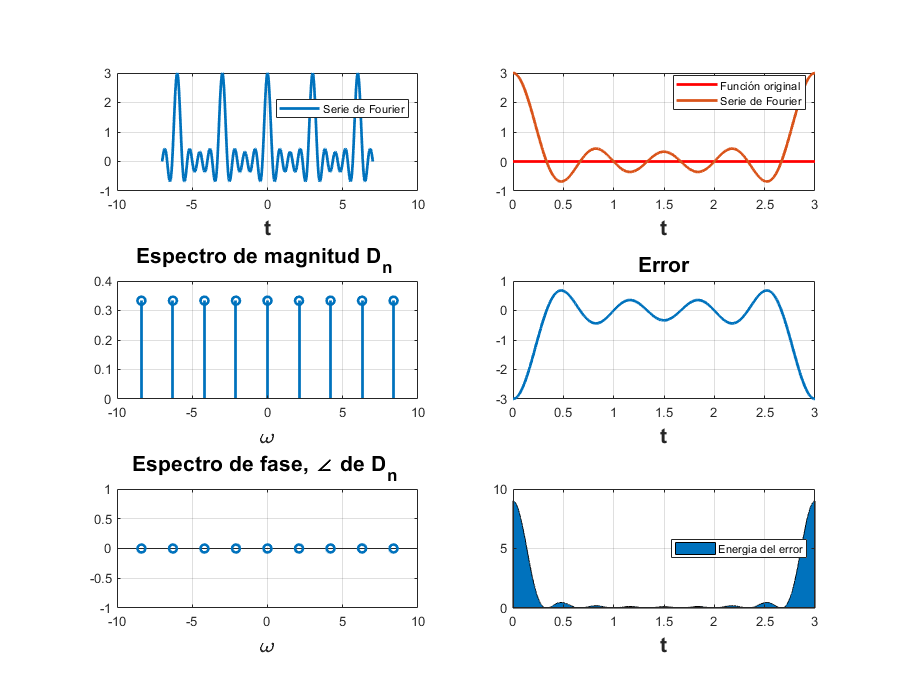
Ejemplo 6.7- 15 armonicos
close all; clear all; d0=1/3; dn=@(n) 1/3; t0=0; tf=3; f=@(t) dirac(t); armo=15; a=-7; b=7;
sfc9(t0,tf,dn,d0,f,armo,a,b);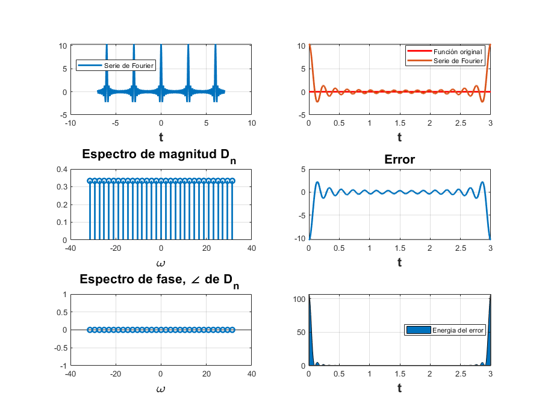
C6.2 Ejemplo 6.2
close all; clear all; A=3; f=@(t) 2.*A.*t.*(t>=-1/2 & t<=1/2); g=@(t) 2.*A.*(1-t).*(t>1/2 & t<=3/2); x=@(t) f(t)+g(t); t = [-1/2:0.001:3/2]; sumterms = zeros(16,length(t)); sumterms(1,:) = 0; for n = 1:size(sumterms,1)-1; sumterms(n+1,:) = (8.*A)./(n.^2.*pi.^2).*sin(n.*pi./2).*sin(n.*pi.*t); end x_N = cumsum(sumterms); figure(1); clf; ind = 0; for N = [0,1:2:size(sumterms, 1)-1], ind = ind+1; subplot (3,3,ind); plot(t,x_N(N+1,:),'k',t,x(t), 'k--'); axis([-1/2 3/2 -4 4]); xlabel('t'); ylabel(['x_{',num2str(N),'} (t)']); end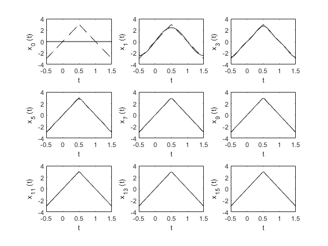
Entregable 7
Elabore un código que implemente el algoritmo de trapecio compuesto para 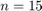, Utilice este código para aproximar 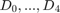 del ejemplo de la práctica. Ahora implemente el código COMPUTER EXAMPLE C6.4 que se encuentra al final de la sección 6.6 de Lathi, y calcule nuevamente el los coeficientes del ejemplo propuesto. Muestre una tabla que contenga los coeficientes mencionados calculados con los dos algoritmos y de forma exacta, ¿Qué algortmo aproxima mejor a los coeficientes?, para esto compare los coefientes con el valor absoluto de la resta.
Dn analítico
close all; clear all; n=[0:4]'; DnAn = (0.504)./(1+4.*n.*j); % Dn Lathi T_0 = pi; N_0 = 5; T = T_0/N_0; t = (0:T:T*(N_0-1))'; x = exp(-t/2); x(1) = (exp(-pi/2) + 1)/2; DnLathi= fft (x)/N_0; % Dn Trapecio syms t; trap=15; f=@(t) exp(-t/2); Tcer=pi; wcer=2; a=0; b=pi; n=[0:4]'; DnTrapecio= (1/Tcer).*Trapecio(f(t).*cos(n.*wcer.*t),a,b,trap) - j.*(1/Tcer).*Trapecio(f(t).*sin(n.*wcer.*t),a,b,trap); % Calculamos el Error de Analitico Vs Lathi EAn= abs(DnAn-DnLathi); %Calculamos el Error de Analitico Vs Trapecio compuesto EAnT= abs(DnAn-DnTrapecio); % Tabla de resultados T = table(n,DnAn,DnLathi,DnTrapecio,EAn,EAnT) function [Integral]=Trapecio(funcion,a,b,trapecios) h=(b-a)/trapecios; f=0; for t=1:trapecios-1 x=a+h*t; f=f+eval(funcion); end f=2*f; x=a; f=f+eval(funcion); x=b; f=f+eval(funcion); Integral=(h/2)*(f); end
T =
5×6 table
n DnAn DnLathi DnTrapecio EAn EAnT
_ ___________________ __________________ ___________________ _________ ________
0 0.504+0i 0.50842+0i 0.10273+0i 0.0044203 0.40127
1 0.029647-0.11859i 0.03415-0.1017i -0.022155-0.019673i 0.017476 0.11166
2 0.0077538-0.062031i 0.013609-0.025049i -0.023505+0.014194i 0.037443 0.082385
3 0.0034759-0.04171i 0.013609+0.025049i 0.07036+0.055657i 0.067524 0.11813
4 0.0019611-0.031377i 0.03415+0.1017i -0.019675-0.025823i 0.13692 0.022338